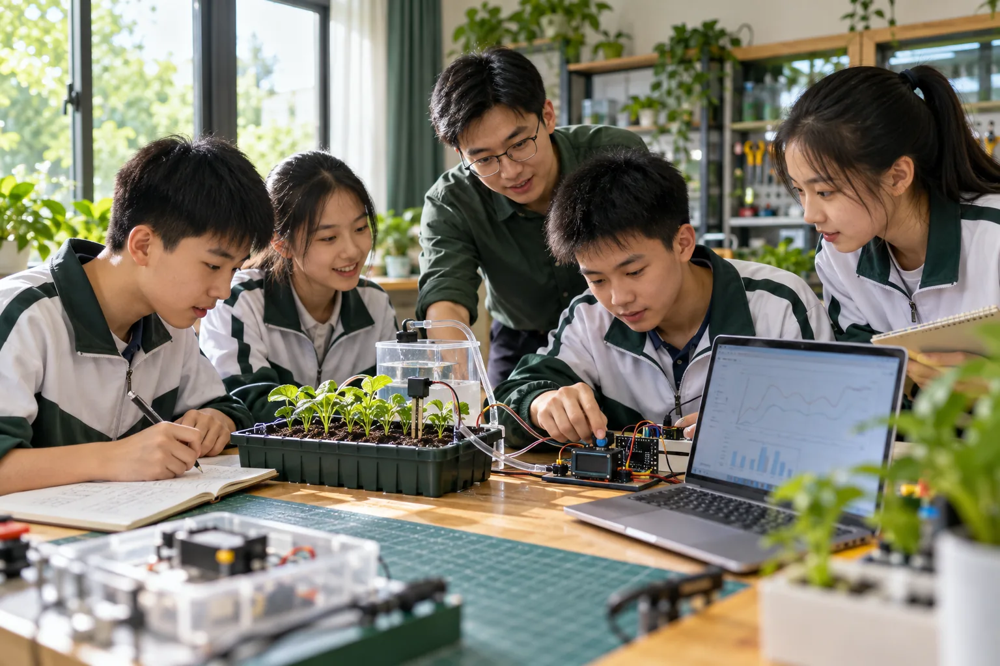

未来农场研学
以上海宝山月狮9号农场为实践场景，探索无土栽培、智慧农业与生态循环。
适合对象 · 学校与中小学生
成果 · 种植记录、识别装置、实验数据与成果展示
OUR APPROACH / 教育理念
启光教育围绕“提出问题与假设 → 设计方案 → 搜集与分析证据 → 得出结论 → 制作与改进 → 交流反思”设计课程。学生亲手尝试，也带走自己的作品、数据与新问题。
PROGRAMS / 项目目录
从农场到实验室，再到人与自然的连接。
以上海宝山月狮9号农场为实践场景，探索无土栽培、智慧农业与生态循环。
适合对象 · 学校与中小学生
成果 · 种植记录、识别装置、实验数据与成果展示
围绕生命健康、生态环境、地球奥秘、航空航天、新兴产业和人工智能六大主题，从真实问题展开探究。
适合对象 · 学校与中小学生
成果 · 实验方案、工程原型、研究报告与展示PPT
结合园艺体验、自然观察与亲子协作，支持情绪表达、沟通与行动力成长。
适合对象 · 青少年与家庭
成果 · 成长手记、共同作品与行动卡
WHAT WE OFFER / 合作服务
面向学校、园区与教育团队。
按对象、场地和时长设计问题导入、实践任务与成果展示。
提供课程目标、探究步骤、材料清单与学生成果任务。
帮助导师熟悉课堂组织、设备使用与操作安全。
为项目整理展示页面、成果档案与受控资料空间。

LEARNING BY DOING
从观察植物，到搭建作物识别装置；从记录数据，到解释实验结果。项目根据学生年龄与现场条件调整，让每次实践都有继续追问的空间。
查看资料访问方式 ↗JOURNAL / 项目动态
项目进展、课程观察与活动消息。
项目动态将在这里发布。
RESOURCE ACCESS / 项目资料
官网内容可直接浏览。PPT、教案和活动图片等内部资料计划在正式版开放给持内部账号的成员。当前展示版不提供登录和下载。
项目资料库筹备中